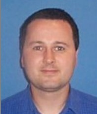
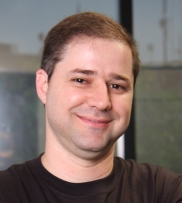
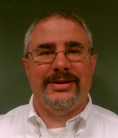
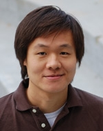

About JCP
Get Involved
Community Resources
Community News
FAQ
Contact Us
About JCP
Get Involved
Community Resources
Community News
FAQ
Contact Us

|
|
Java Community Process: EC Special Elections nominees for 2011

|
The 2011 Java Community Process (JCP) Program Executive
Committee (EC) Special
elections ran from 26 April 2011 through 9 May 2011. The EC Elections process was launched in
June 2000.
The following seats were up for the 2011 JCP EC Special Elections:
Apache, Doug Lea and Tim Peierls on the SE/EE EC, and Sony-Ericsson on the ME EC
The following JCP Members were elected in the 2011 JCP EC Special Elections:
Goldman Sachs, SouJava, and the London Java Community to the SE/EE EC, and Alex Terrazas to the ME EC.
What follows are the qualification statements of the candidates for the Executive Committee, along with a brief biography of the person who would serve as the Member's representative on the Executive Committee if that Member had been elected, and a position paper when one was provided.
On April 14 Oracle hosted a conference call to introduce their nominees for ratified seats (Bruno Souza of SouJava and John Weir of Goldman Sachs) to members of existing Executive Committees and the developer community. Listen to that first call here.
A second call, to which nominees for the elected seats were invited to join Bruno and John, was held on Tuesday April 26. Listen to that call here.
|
2011 SE/EE EXECUTIVE COMMITTEE RATIFIED SEAT CANDIDATES |
|
Goldman Sachs
|
Goldman Sachs is a financial services firm built on its global technology enterprise. Development at the firm is overwhelmingly Java-based, with more than 130 million lines of Java code under management, and more than 3,000 developers in its Java user group implementing systems which are then leveraged by over 10,000 end-users.
Goldman Sachs custom-builds most of its software, and its historical reliance on open source components, as well as its extensive multi-vendor relationships, give it deep experience with problems of interoperability and systems/software integration. As a major consumer of Java, Goldman Sachs is thus deeply invested in its future, and seeks to contribute to Java standards. We remain committed to the continued evolution of Java, both through the innovation of the broad Java community, and the ongoing process of standardization.
The firm participates on both individual and corporate levels in a broad range of industry forums and leadership groups, including: Java One (presenting "Java on 40,000 desktops"); The Hong Kong Java User Group (which is run by a member of the firm); contributions to the Fitnesse acceptance testing framework; and various open source projects, including Zookeeper, the Trove Collections framework and OpenJDK.
As a member of the JCP Executive Committee, our representative, John Weir, would put particular focus on ways to advance the role of Java in the enterprise, and on furthering cross-vendor integration. Areas of specific interest include management features, parallel processing, serialization, cloud / dynamic computing and security.
Goldman Sachs position paper (.pdf file)
|

John Weir
|
John Weir is currently the CTO of the Operations Technology Business Unit at Goldman Sachs, which deals with all post-trade transaction processing. The collection of globally distributed systems that supports these flows is predominantly written in Java, and deals with very high transactional volumes of real time trading in a highly resilient and scalable fashion. John supervises the architecture, build and technical strategy of over 1,000 developers in six global offices. He is a member of the ISDA Financial Products Markup Language (FpML), Credit Derivatives, and Architectural working groups, a standards body drawn from a broad-based coalition of financial instructions to define the XML standard for derivative contract definitions. John was also a member of the Wall Street Software Quality Roundtable, a forum for improving software development practices across the industry. He remains an active Java developer, focused on further leveraging Goldman Sachs' decade-long investment of writing systems in Java. Recently he has been exploring using Behavioral Driven Design patterns (BDD), with tools like Spock and Groovy, as a way to improve quality and reduce the impedance in coding specifications.
|
| | |
|
Sociedade de Usuários da Tecnologia Java - SouJava |
SouJava (the "Java Users Society") is an established non-profit organization and Java User Group focused on strengthening the Brazilian Java developer community. Founded in 1998 and based in Sâo Paulo (Brazil's technology and business hub), SouJava congregates over 40 thousand members throughout the country. It has hosted activities and events in dozens of cities in Brazil and is committed to the Java technology ecosystem, actively promoting and defending the technology since its foundation. The group participated in many discussions about Java adoption inside companies and Government agencies and has facilitated Java standard and technology adoption for major enterprises in the public and private sectors.
Fulfilling its main role of vendor-independent Java evangelist, SouJava has created and organized some of the largest Java conferences and community gatherings in the country in any technology. These include all editions of JustJava (the major independent Java event in Brazil) and of the University-focused Abapuru, as well as two successful international developer conferences: Sou+Java and CaféBrasil.
SouJava has also acted as an independent evangelist of open source technology, having organized the influential "Java Livre" event, part of Latin America's major open source conference, FISL. By helping connect the Java and open source communities, the group has brought together major industry and community players and mediated discussions and controversies between vendors and open source organizations. SouJava had, thus, an important role in the open sourcing of Java.
SouJava was the first JUG to join the Program and has been a member of the JCP for 7 years. Having promoted the Java Community Process in Brazil for many years more, the group worked heavily to get the Brazilian Government to participate and recognize the importance of the JCP - and to add open source, standards and Java to the Government's agenda. SouJava also facilitated Brazilian developer participation in the JCP. Additionally, many of the group's directors are experts in JSRs, which worked to extend the group's experience.
SouJava considers the JCP a fundamental part of the Java ecosystem. The long-term success of Java depends on a process that encourages vendors, developers and users to contribute and innovate, and that gives everyone the necessary rights to implement the results. SouJava is committed to ensuring that the JCP is balanced and transparent, and that there is an equal standing among JCP members. The group intends to represent the main concerns of Java developers (individuals as well as companies), in order to help ensure the JCP is not a process dominated by vendors. From its good standing with many of the most active Java vendors and corporations, SouJava will help mediate disputes, while bolstering developers' best interests. Moreover, as an active participant in open-source efforts, the group will help ensure that FOSS projects and implementations of Java standards are able to both bring contributions, and also to share process results.
SouJava intends to bring its passion for open source, standards, and Java technology to the JCP, and thus foster transparency and participation. We look forward to expanding our relationship with the Java community as a SE/EE EC member, and appreciate your support in making this possible.
|

Bruno Souza |
Bruno Souza is a Java Developer and Open Source Evangelist. As founder and coordinator of SouJava (Sociedade de Usuários da Tecnologia Java; Java Technology Users Society) and leader of the Worldwide Java User Groups Community at Java.net, Bruno helped in the creation and organization of hundreds of JUGs worldwide.
A Java Developer since the earliest days of the technology, Bruno took part in some of the largest Java projects in Brazil. Bruno is a Principal Consultant at Summa Technologies, and has extensive experience in large projects in the Government, finance and service industries. A Cloud Expert at ToolsCloud, he promotes and develops cloud-based systems using Java. Nurturing developer communities is a personal passion, and Bruno worked actively with Java open source communities and projects.
Bruno Souza is an Honorary Director of the Open Source Initiative (OSI), President of the innovation-focused Campus Party Institute, and Coordinator of Nuvem, the Cloud Computing Lab of LSI/USP. When not in front of a computer, Bruno enjoys time with his family in a little hideout near Sâo Paulo. An amateur in many things - photographer, puppeteer, father - he strives to excel in some of them.
|
| | |
|
2011 ME EXECUTIVE COMMITTEE OPEN ELECTION SEAT CANDIDATES |
|
Alex Terrazas
|
Alex has used Java ME to develop software for special education and health applications. His research is funded by the National Institutes of Health, National Science Foundation and DARPA. He has been working with Android & Apple iOS recently. He has a wide perspective. He also has a PhD in Psychology and Neuroscience.
|
|
|
Dr. Alex Terrazas holds a Ph.D. in Psychology and Neural Systems from the University of Arizona and has considerable experience in physiologically-inspired neural networks, technology development, and behavioral psychology. Dr. Terrazas completed a fellowship at the NIH, where he conducted human brain imaging experiments and developed fMRI image analysis methods. He is an expert in computer vision, object-oriented programming and mobile technology.
|
|
2011 SE/EE EXECUTIVE COMMITTEE OPEN ELECTION SEAT CANDIDATES |
|
Central Ohio Java Users Group
|
The Central Ohio Java Users Group (COJUG) has been around for approximately 14 years meeting twice monthly with a focus on providing knowledge sharing on Java and related topics and professional networking. Please go to www.cojug.org for more information about the COJUG.
Central Ohio Java Users Group position statement (.pdf file)
|

Dan Sline
|
Dan Sline has over 16 years in the software industry working with various financial, health care, utilities, energy, and education systems. He has been using Java since 2000. He is a Vice President and an Architect with JPMorganChase in their Corporate Technology group. He has a B.S. in Business Management with Minors in Math and Computing from Ithaca College (12/92) and a M.S. in Management Information Systems from Texas A&M University (12/95). He is also a Sun Certified Developer.
|
| | |
George Gastaldi
|
Dedicated and technically skilled, George works professionally with Java and Open Source since 2000. In 2006 George joined Apache as an individual commiter to work on Apache ServiceMix (An open source ESB that is JBI compliant). Actually George works as a Java architect / consultant and mentors people on Java-related technologies. George is also one of the committers on Seam 3 JCR Module and submits patches to jBoss related projects (Richfaces, Modeshape, Seam 3).
|
| | |
Siddique Hameed
|
Siddique is a open-source software technologist and has been part of the open-source movement for long time. He would like to be a JCP EC representative, so he could be in the forefront in shaping the future of Java. http://boxysystems.com/ Please checkout his linked in profile & open-source projects at the following links:
http://www.linkedin.com/profile/view?id=3637504&trk=tab_pro
"http://code.google.com/p/scriptmonkey/
http://code.google.com/p/libraryfinder/
http://code.google.com/p/jgoogleanalytics/
Siddique Hameed's position statement (.pdf file)
|
| | |
|
Liferay, Inc.
|
For over 10 years, Liferay has led the Liferay Portal community and delivers the Liferay platform; the leading open source portal for the enterprise. Under the guidance of Brian Chan and its executive team, Liferay has lead the market with ease-of-use innovations such as drag-and-drop repositioning, social networking collaboration and multi-container support, which have earned acclaim of the analyst and technical communities. Enterprises worldwide have adopted Liferay as an open alternative.
Liferay position statement (.pdf file)
|

Brian Chan
|
Brian Chan, Chief Software Architect and founder, created Liferay Portal in 2000 to provide non-profit organizations with an open source solution to facilitate collaboration on the Internet. He has since steered Liferay to become a worldwide leader in innovative open source enterprise solutions. Brian holds a dual B.S. degree in Economics and Computer Science from the University of Chicago. He has spoken at events such as JavaOne and JAX Asia and holds an EG seat for JSR-286 and JSR-314.
|
| | |
|
London Java Community
|
London Java Community (aka the London JUG) is a large (~1700
members) and vibrant community of Java enthusiasts drawing upon a wide
variety of experiences. Our members range from undergraduate students,
through journeyman programmers all the way to some of the best-known
names in the industry. We believe that we are uniquely placed to
represent a variety of concerns. However, we explicitly prejudice some
concerns above others.
In 2011, the superiority of the open source model as a method of
producing software is obvious and no longer needs to be qualified.
Therefore, if elected, we take the position that any exemptions to the
open model must be well-justified and very narrowly drawn.
We welcome the efforts to reform the JCP and the efforts by Oracle and
others, but we wish to be clear: Our goal is extreme openness.
We seek constructive engagement with our corporate partners, however,
this is strictly secondary to serving the needs of our members.
We believe that our members, and the wider community, are best served
by an entirely open model that rigorously enforces the principles of
free and open software above any corporate or private interests.
We believe that the encouraging signs and new leadership that Oracle
have shown are a welcome step in the right direction, but that there
is still a long way to go. We welcome and celebrate the work that has
been done so far. If elected, we look forward to being a vigorous
partner in driving SE/EE towards a shared open future to the benefit
of all in the Java ecosystem.
We have the best general purpose virtual machine in the world, and its
Open. We want to build on this, who wants to come with?
|
Ben Evans
|
Ben Evans has been a professional developer and open source enthusiast
since the late 90s. He has delivered world-class projects for banks,
media companies and charities in that time, and currently works as a
lead architect, principal engineer and in-house Java expert at one of
the world's leading financial service institutions.
Ben primary technical interests are language design, virtual machine
ergonomics and drinking beer.
|
ABOUT THE JAVA COMMUNITY PROCESS (JCP) EXECUTIVE COMMITTEES
The JCP has two Executive Committees (EC) -
Standard/Enterprise & Micro
Edition, each targets different markets for the Java Platform. Voting
Members on each EC serve 3-year terms; there are 10 Ratified Seats, 5
Elected Seats, and the permanent seat held by Sun Microsystems, Inc.
The
3-year terms are staggered so that 5 of the 15 seats are normally up
for
ratification/election each year.
The EC members guide the evolution of the Java technologies.
The EC
represents a cross-section of both major stakeholders and other members
of the Java Community. Duties are: select JSRs for development, approve
draft Specifications for Public Review, approve Final Specifications,
review TCK appeals, approve Maintenance revisions and possibly defer
some features to a new JSR, approve transfer of maintenance duties
between members and provide guidance to the Program Management Office
(PMO). For more information on the EC, see the Executive Committee Info
page http://jcp.org/en/participation/committee.
For 2000 EC Elections results, please look here.
For 2001 EC Elections results, please look here.
For 2002 EC Elections results, please look here.
For 2003 EC Elections results, please look here.
For 2004 EC Elections results, please look here.
For 2005 EC Elections results, please look here.
For 2006 EC Elections results, please look here.
For 2007 EC Elections results, please look here.
For 2008 EC Elections results, please look here.
For 2009 EC Elections results, please look here.
For 2010 EC Elections results, please look here.
For more information on the JCP, see the JCP Overview page
http://jcp.org/introduction/overview.
Contact the PMO for election questions at pmo@jcp.org
|
|
|